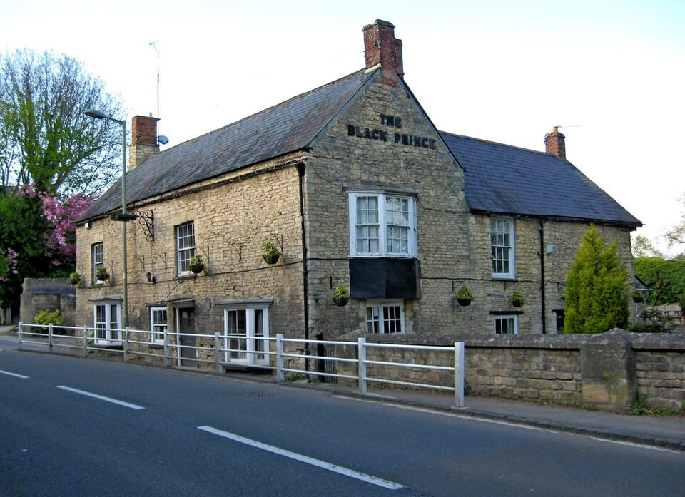
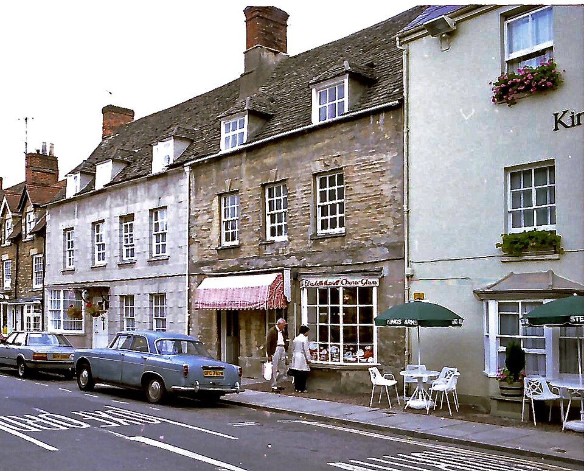
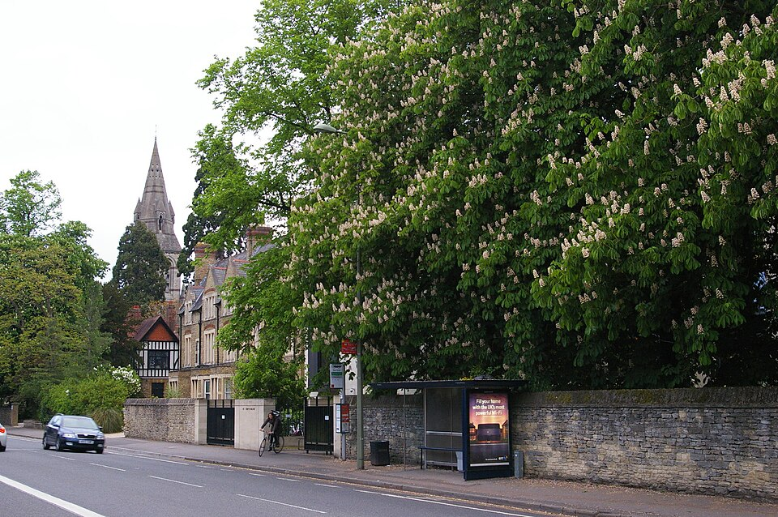
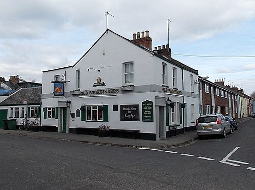

Роман · 1975
Последний автобус на Вудсток
Last Bus to Woodstock — первый роман об инспекторе Морсе.
- Первое издание
- Macmillan, Лондон, январь 1975
- Расследуют
- инспектор Морс и сержант Льюис, полиция долины Темзы
- Место
- Северный Оксфорд и городок Вудсток в тринадцати километрах к северо-западу
- По-русски
- «Инспектор Морс. Последний автобус на Вудсток», изд. «Армада», 1997
- Экранизация
- «Инспектор Морс», 22 марта 1988; режиссёр Питер Даффелл, сценарий Майкла Уилкокса
- Радио
- BBC Radio 4: постановки 1975 и 1984 годов
Завязка
Вечер, остановка на Вудсток-роуд в Оксфорде. Две девушки ждут последний автобус до Вудстока, не дожидаются и решают ехать попутной машиной. Красная машина их подбирает. Поздно вечером одну из них, Сильвию Кей, находят мёртвой во дворе паба «Чёрный принц» на окраине Вудстока. Вторая девушка в полицию не приходит, и дальше Морс почти весь роман ищет не столько убийцу, сколько её: кто стоял рядом с Сильвией на остановке и почему молчит.
Это первое общее дело Морса и Льюиса в книгах. Многое в их отношениях задаётся уже здесь: Морс стремителен и несправедлив, перескакивает от одной блестящей гипотезы к другой и регулярно ошибается, а Льюис проверяет, записывает и терпит.
Развязка — открыть, если роман прочитан
Красная машина принадлежит Бернарду Кроутеру, оксфордскому преподавателю с Саутдаун-роуд. Он подвёз девушек, но в Вудстоке ехал на свидание с любовницей. Его жена Маргарет, решив, что убийца муж, кончает с собой; вскоре Кроутер умирает от сердечного приступа, уверенный, что убила жена.
Убийца — Сью Уиддоусон, вторая девушка с остановки и любовница Кроутера. Из ревности она подкралась к Сильвии во дворе паба и ударила её по голове монтировкой. Записки Кроутера к ней шли через Дженнифер Колби, соседку Сью по квартире и сослуживицу Сильвии.
Люди
| Имя | Кто это |
|---|---|
| Сильвия Кей | Жертва, служащая страховой конторы «Таун энд Гаун». |
| Дженнифер Колби | Сослуживица Сильвии, любовница своего начальника Клайва Палмера. |
| Сью Уиддоусон | Соседка Дженнифер по квартире. Морс увлекается ею всерьёз. |
| Бернард Кроутер | Оксфордский преподаватель, владелец красной машины. |
| Маргарет Кроутер | Его жена. |
| Джон Сандерс | Молодой человек, который нашёл тело. |
| Миссис Джармен | Пожилая свидетельница. |
| Макс | Полицейский патологоанатом, см. статью. |
| Стрейндж | Начальник Морса, см. статью. |
Места
Почти все места романа настоящие, их можно обойти за день: от Вальтон-стрит в Джерико до моста в Вудстоке. Вымышлен колледж Лонсдейл: у Декстера он стоит на месте настоящих колледжей и появляется во многих романах.
| Место | Что там происходит | |
|---|---|---|
| «Чёрный принц» | есть | Паб у моста в Старом Вудстоке, Манор-роуд, 2. Во дворе находят Сильвию. |
| Вудсток-роуд | есть | Улица из центра Оксфорда на север. Здесь остановка, с которой всё начинается. |
| Вальтон-стрит | есть | Льюис ходит в кинотеатр «Студио 2»; сейчас в этом здании кино «Феникс». |
| «Переплётчики» | есть | Паб Bookbinders Arms в Джерико, ныне Old Bookbinders. |
| «Птичка с младенцем» | есть | Так оксфордцы зовут паб «Орёл и дитя» (Eagle and Child). |
| Колледж Лонсдейл | вымысел | Колледж, где преподаёт Кроутер. |








Морс в этом романе
Морс здесь худощав, темноволос, с жёсткими серыми глазами и редеющими волосами, курит и легко взрывается. Ездит он на «Лянче» (подробнее в статье «Машины»), читает The Listener и газету о скачках The Sporting Life, решает кроссворды и из музыки слушает только «Кольцо нибелунга» Вагнера.
Книги и стихи в романе
Декстер с первого романа набивает текст цитатами, и половина удовольствия в том, чтобы их узнавать. Вот что упоминают или цитируют герои:
- Шарлотта Бронте, «Городок» — книга в доме Дженнифер Колби.
- Эрнест Даусон, собрание стихов. Его читает Кроутер, а Маргарет цитирует стихотворение «Non sum qualis eram».
- Книга пророка Исаии, 1:18 — Кроутер вспоминает стих со школы. В Синодальном переводе: «Если будут грехи ваши, как багряное, — как снег убелю».
- Мильтон, «Потерянный рай» — его читает Кроутер и цитирует Ньюлав.
- Вордсворт, «Прелюдия», и Кольридж, «Сказание о старом мореходе» — их вспоминает Морс.
- Томас Харди, «Мысли о Фене» (Thoughts of Phena). Морс называет его самым печальным стихотворением из всех, что знает.
- Шекспир: «Цимбелин» (тема студенческого сочинения) и «Генрих V».
- Эдвард де Боно, книга о латеральном мышлении. Морс берёт её в библиотеке.
Реалии
- Полиция долины Темзы (Thames Valley Police)
- Полиция графств Оксфордшир, Беркшир и Бакингемшир, созданная в 1968 году слиянием нескольких местных полиций, включая городскую оксфордскую. Морс и Льюис служат в её уголовном розыске.
- CID
- Criminal Investigation Department — уголовный розыск. Его сотрудники ходят в штатском, поэтому Морс «инспектор», но без формы.
- Дон (don)
- Преподаватель Оксфорда или Кембриджа, член колледжа. Кроутер — дон.
- Северный Оксфорд и Саммертаун
- Район больших викторианских домов профессуры к северу от центра; Саммертаун — его торговая часть на Банбери-роуд.
- Вудсток
- Городок к северо-западу от Оксфорда, у ворот Бленхеймского дворца, где в 1874 году родился Уинстон Черчилль.
- Попутка (lift)
- В Англии семидесятых девушки нередко добирались домой автостопом, особенно когда уходил последний автобус. Роман построен на этой обыденности.
- The Listener
- Еженедельный журнал Би-би-си (1929–1991), печатал тексты радиопередач, рецензии и знаменитый трудный кроссворд.
- The Sporting Life
- Ежедневная газета о скачках и ставках. Неожиданное чтение для любителя Вагнера, и Декстер это знает.
Книга и сериал
Серия вышла 22 марта 1988 года во втором сезоне «Инспектора Морса» (седьмая серия по общему счёту). В ролях: Джон Тоу (Морс), Кевин Уотли (Льюис), Питер Вудторп (Макс), Энтони Бейт (Кроутер), Джилл Бейкер (Дженнифер Колби), Ингрид Лейси (Мэри Уиддоусон), Фабия Дрейк (миссис Джармен).
- Сью Уиддоусон стала Мэри, Сильвия Кей — Сильвией Кейн.
- Морс ездит на «Ягуаре» Mark 2, а не на «Лянче».
- Убийство снимали не в Вудстоке: «Чёрного принца» сыграл паб «Фокс энд Касл» в Олд-Виндзоре.
Чем отличается финал — открыть
В фильме гибель Сильвии ближе к несчастному случаю: Мэри Уиддоусон в ссоре сбивает её с ног, а Кроутер, сдавая назад, переезжает её, не заметив. Линия с самоубийством Маргарет Кроутер из сериала убрана.
Как Декстер начал
В 1972 году Колин Декстер отдыхал с семьёй в Северном Уэльсе. В дождливую субботу, сидя на кухне, он написал несколько абзацев о сыщике по фамилии Морс. Место действия (Оксфорд) и развязку он уже знал. Роман он дописывал ещё полтора года. Фамилию сыщик получил в честь сэра Джереми Морса, банкира и мастера кроссвордов.